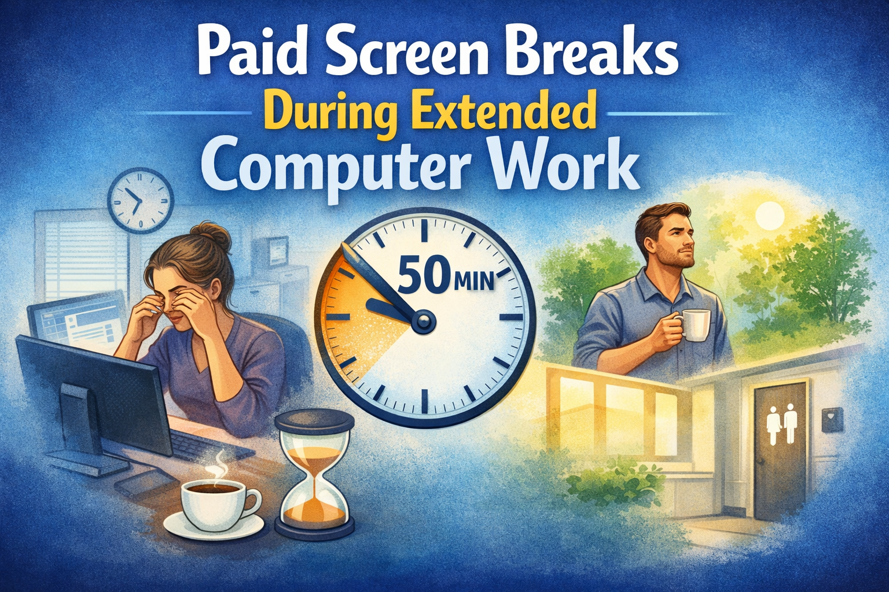

Paid Screen Breaks During Extended Computer Work

For many employees, long periods of screen work are part of the job. Because this can put significant strain on the eyes, employees are entitled to regular changes of activity or paid screen breaks.
For many employees, long periods of screen work are part of the job. Because this can put significant strain on the eyes, employees are entitled to regular changes of activity or paid screen breaks.
How it works:
- If you work at a screen for more than two hours continuously, or more than three hours in total with interruptions, you are entitled to either a 10-minute change of activity or a 10-minute paid break after every 50 minutes.
- If work demands make this necessary, the break or change of activity may be postponed until after 100 minutes, but in that case it must last 20 minutes.
- A change of activity should allow your eyes to rest. If that is not possible, you are entitled to a paid screen break instead.
- Getting a coffee, taking a short movement break, or going to the restroom can count as a screen break, in full or in part.